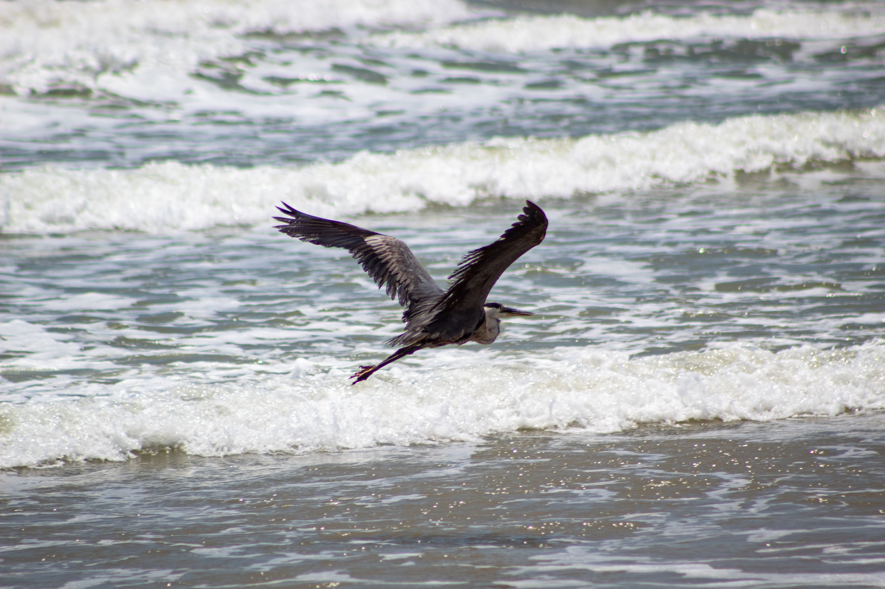
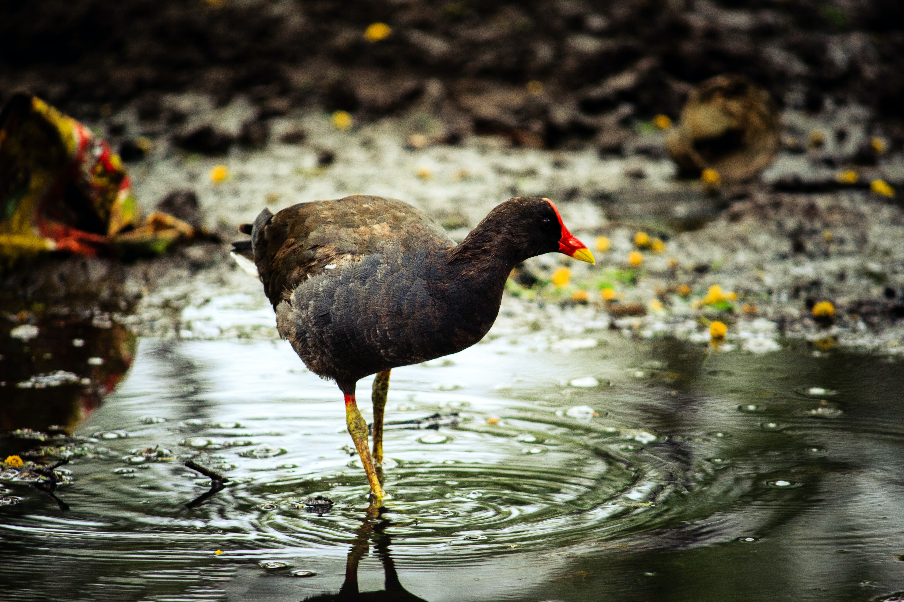
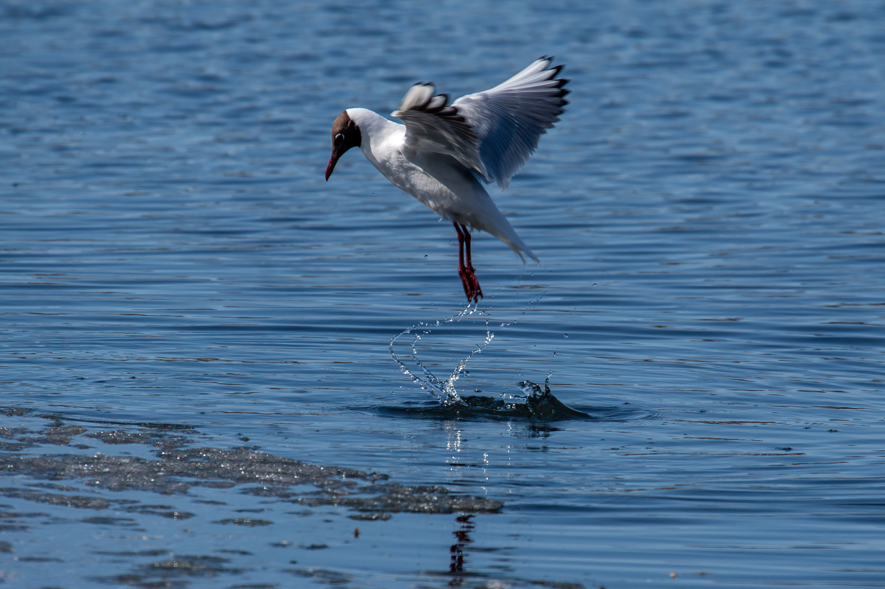
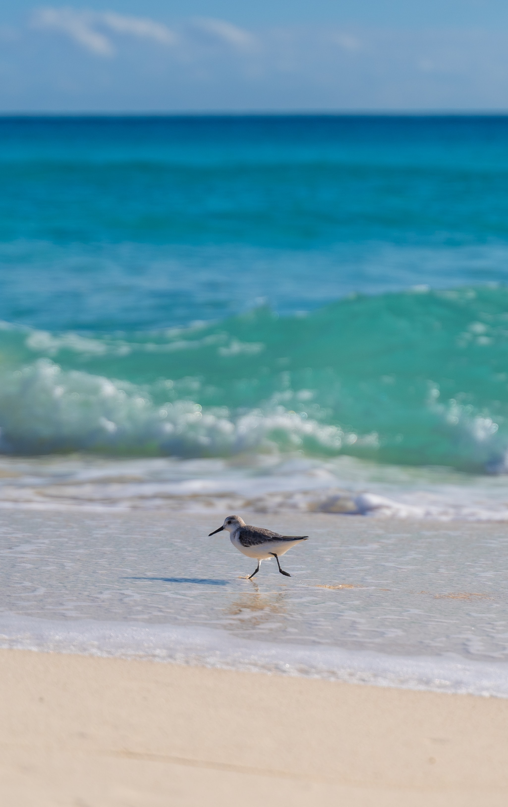
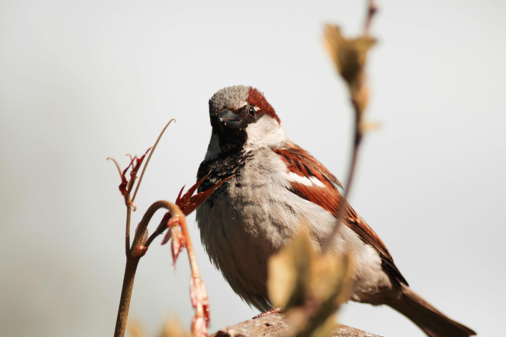
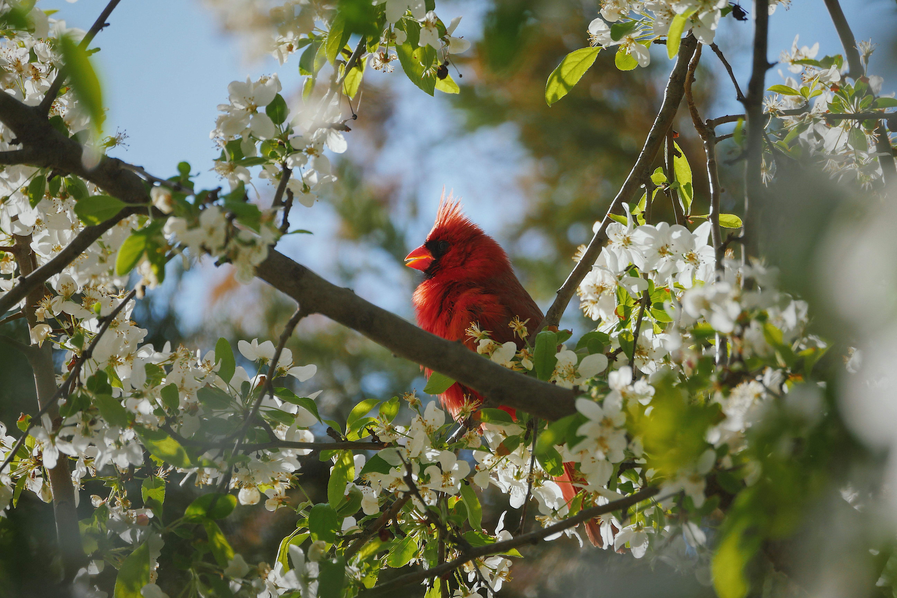
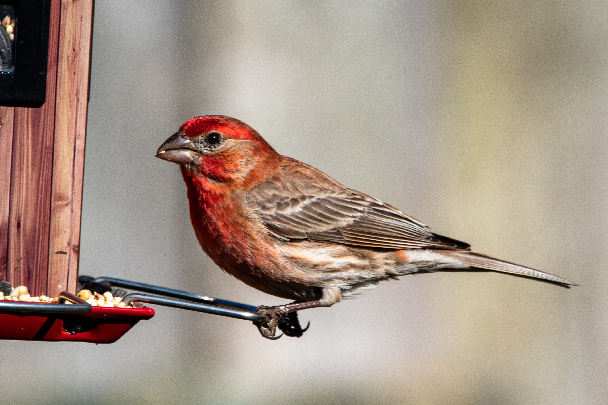

HAWAIIAN CREEPER _Loxops maculata_

DESCRIPTION: 4½″. Very similar to the female or immature amakihi, but
the bill is straighter and tends to be lighter in color. Creepers search
for insects on the trunks and heavier branches, while amakihis usually
work more in the foliage.
PARK DISTRIBUTION: Kilauea—Now very rare in the upper rain forest or koa
parkland on Mauna Loa. Haleakala—Has not been definitely recorded within
the park for many years.
Twenty years ago creepers were often seen in the Mauna Loa Strip area of
the Kilauea Section, but from 1958-1960 the author saw only one. On the
other hand, introduced white-eyes have greatly increased their numbers
in recent years, and now they are by far the commonest bird along the
Mauna Loa Strip. White-eyes feed in much the same manner as
creepers—they carefully glean tiny insects from limbs of ohia, mamani,
and other trees. It seems likely that direct competition for insects by
the white-eyes is an important factor in the recent decline of Hawaiian
creepers.
OU _Psittirostra psittacea_

[Illustration: OU
(male)]
DESCRIPTION: 6½″. A greenish bird with a heavy _parrotlike bill_. Male:
Varying shades of green above, lighter below, with a _bright yellow
head_ that give it the appearance of being unusually large headed.
_Female and Immature_: Lack the yellow head.
PARK DISTRIBUTION: Kilauea—Rare; in the wet tree-fern jungle. Thurston
Lava Tube is within its range. Haleakala—Absent from Maui.
VOICE: A beautiful singer, according to Munro. Note: a medium
high-pitched _teweé_.
Ous are fairly inactive birds, often spending long periods quietly on
the branch of an ohia or other tree, and would be difficult to locate in
the dense forest except for the bright male plumage. They frequently
travel in pairs and apparently have a small individual range, for the
same pair may be seen day after day in one locality. Their food consists
of fruit.
APAPANE _Himatione sanguinea_

[Illustration: APAPANE
(immature and adult)]
DESCRIPTION: 5½″. Crimson red with black wings and tail, _white
abdomen_, and slightly down-curved _black bill_. Only similar species,
the iiwi, has a red abdomen and a long orange bill. Immatures are
confusing, as the red is mostly lacking. However, grayish birds having a
touch of rusty red on the sides and white under the tail, and feeding in
ohia tops, are surely this species. The throat and face of young
apapanes may appear yellow-orange.
PARK DISTRIBUTION: Kilauea—Common to abundant throughout the wet ohia
forest; much less common in the drier forests. Haleakala—Common locally
in forested areas such as Hosmer Grove or Paliku.
VOICE: You will hear a constant chorus of short songs and notes from the
highest ohia tops whenever apapanes are about. The quality varies from
sweet whistled notes to harsh chips and buzzes, usually intermixed.
Probably the most varied songster in the park.
The apapane is likely to be your first introduction to the endemic
Hawaiian honeycreepers. While most of Hawaii’s native birds have either
become extinct or are greatly reduced in numbers, this species seems to
have held its own wherever there are ohia trees to provide a supply of
lehua nectar. Examine a cluster of red ohia blossoms. You will find that
each tiny cup which bears long bright stamens is filled with honey. A
single ohia in full bloom with countless thousands of these nectar-cups
must produce many pounds of honey. No wonder one blossoming tree will
attract so many honeycreepers.
You will see the birds high in the trees, flitting about from flower to
flower, often stopping to pick up insects along the way. Although a few
trees are in bloom throughout the year in any given area, there are
definite “flowering periods” for the ohia when more than half of the
trees may be in full blossom. The season for these flowering periods
will vary among localities, and tremendous flocks of apapanes and other
honeycreepers follow the bloom from one area to another. They can often
be seen flying high overhead in small groups, all going in the same
direction. But even during times when the ohias are out of bloom a few
apapanes will remain in the forest.
The breeding season is an extended one, and you may see immature
apapanes with almost no sign of red plumage from February to October.
[Illustration: _Ohia blossom nectar is the staple food for the
apapane and iiwi_]
IIWI _Vestiaria coccinea_
 [Illustration: IIWI]
DESCRIPTION: 5¾″. A brilliant scarlet body and _long, orange,
sickle-shaped bill_ distinguishes this honeycreeper. Lacks the white
abdomen of the apapane. Immatures appear greenish-yellow with patches of
red developing with age, but the long orange bill is always diagnostic.
PARK DISTRIBUTION: Kilauea—Common in the wet ohia forest, especially
when the trees are in bloom. Kipuka Puaulu and the vicinity of Thurston
Lava Tube are likely places. Haleakala—Fairly common in Hosmer Grove and
the forest behind Paliku.
VOICE: The creaking of a rusty gate, _ker-eeék_ is the best description
for its commonest note. Other calls include a sharp whistle and a short
warble, all rather harsh.
Look for this bright Hawaiian honeycreeper among flocks of apapanes in
the forest. On a calm day you will hear the heavy flutter of their wings
as they fly from tree to tree. Apapanes also have a similar feather
structure which produces such noisy flight.
Iiwis tend to feed more in the upper-middle branches rather than the
high tops, and they seem to remain in a single tree for a longer time
than the apapanes. Their food is made up of nectar (ohia, mamane, and
other flowers) which they suck up through tubular tongues that extend
the length of their sickle bills, and the larger insects. Old koa trees
often attract iiwis, presumably because of the insects.
You will see birds in green juvenile plumage any time from February
until autumn. These young birds seem to be especially affected by bird
lice, for they spend much time scratching and preening.
[Illustration: IIWI]
DESCRIPTION: 5¾″. A brilliant scarlet body and _long, orange,
sickle-shaped bill_ distinguishes this honeycreeper. Lacks the white
abdomen of the apapane. Immatures appear greenish-yellow with patches of
red developing with age, but the long orange bill is always diagnostic.
PARK DISTRIBUTION: Kilauea—Common in the wet ohia forest, especially
when the trees are in bloom. Kipuka Puaulu and the vicinity of Thurston
Lava Tube are likely places. Haleakala—Fairly common in Hosmer Grove and
the forest behind Paliku.
VOICE: The creaking of a rusty gate, _ker-eeék_ is the best description
for its commonest note. Other calls include a sharp whistle and a short
warble, all rather harsh.
Look for this bright Hawaiian honeycreeper among flocks of apapanes in
the forest. On a calm day you will hear the heavy flutter of their wings
as they fly from tree to tree. Apapanes also have a similar feather
structure which produces such noisy flight.
Iiwis tend to feed more in the upper-middle branches rather than the
high tops, and they seem to remain in a single tree for a longer time
than the apapanes. Their food is made up of nectar (ohia, mamane, and
other flowers) which they suck up through tubular tongues that extend
the length of their sickle bills, and the larger insects. Old koa trees
often attract iiwis, presumably because of the insects.
You will see birds in green juvenile plumage any time from February
until autumn. These young birds seem to be especially affected by bird
lice, for they spend much time scratching and preening.
RICEBIRD _Munia nisoria_

[Illustration: RICEBIRD]
DESCRIPTION: 4″. A tiny, _dark-faced_ bird with a heavy blackish bill.
Differs from house sparrow and house finch females in its smaller size,
the dark face and throat, and under parts that look speckled. The flanks
may appear barred. Nearly always in flocks.
PARK DISTRIBUTION: Introduced to the islands about 1865. Now established
on all main islands. Kilauea—Occasional to common along most park roads
except in the Kau Desert and the upper Mauna Loa Strip. Haleakala—Absent
from the park.
VOICE: A short _wheek_ or _whireép_, softer than the chip of the house
finch, and usually repeated.
Ricebirds used to be great pests among the rice fields of lower
elevations, but their numbers have diminished now that little rice is
grown on the islands. Notice the flocks of half-a-dozen or so that fly
out with short wing beats along park roads, trails, or other places
where weeds thrive. They are primarily ground feeders and even in flight
they seldom rise much above the ground surface.
HOUSE SPARROW _Passer domesticus_
(also English sparrow)

DESCRIPTION: 6″. Almost everyone knows this chunky, grayish-brown bird
with a heavy bill, restricted to areas of human habitation. Males have
black throats; females gray.
PARK DISTRIBUTION: Introduced before 1870. Kilauea—Restricted to areas
of human habitations. Haleakala—A few around Park Headquarters, mainly
during the summer months.
VOICE: Dull chirps.
CARDINAL _Richmondena cardinalis_

[Illustration: CARDINAL
(female and male)]
DESCRIPTION: 4″-10″. _Male_—the only _all red bird with a crest_.
_Female_—yellowish-brown with some red, also crested. Both sexes have a
heavy red bill: however, immatures, which resembles females, have dark
beaks.
PARK DISTRIBUTION: Introduced on several islands since 1929.
Kilauea—Fairly common locally in the drier vegetated areas such as
Kipuka Puaulu. Haleakala—Absent from the park.
VOICE: The song, which may be varied, is made up of a liquid whistled
phrase usually repeated. Note: a sharp _tik_.
Visitors from the eastern states will recognize familiar birdcalls when
a cardinal is nearby. They are usually rather shy birds here, so you
will probably hear them first. Seeds, insects, and fruit make up the
diet of these birds. They are often found in company with the red-billed
leiothrix.
HOUSE FINCH _Carpodacus mexicanus_
(also linnet or papaya bird)

[Illustration: HOUSE FINCH
(female and male)]
DESCRIPTION: 5½″. _Male_—Grayish-brown with rosy red breast, forehead,
stripe over eye, and rump. At Haleakala the color is more yellow than
red. _Female_ and _Immature_—Sparrowlike with a gray-brown back and
dusky-white streaked breast. House finches have thick seed-eating bills.
PARK DISTRIBUTION: Introduced before 1870. Kilauea—very common in the
drier sections of the park, especially along the Hilina Pali road and at
Kipuka Puaulu. Haleakala—One of the commonest birds in the park both
inside and out of the crater.
VOICE: A rapid, disjointed warbling song, usually lasting several
seconds. Note: one or a series of chirps, more musical than that of the
house sparrow.
This is strictly a social species living in flocks ranging in size from
a few birds to 20 or more. On the Island of Hawaii the introduced house
finch has adapted well to a habitat that is presently unoccupied by any
native resident—the dry grassy regions of the Kau Desert and along
Hilina Pali.
On the mainland house finches are reddish; the same is true for most
Kilauea birds. However, at Haleakala the usual color of the male is
yellow or orange. It seems likely that diet, which is known to affect
pigmentation in bird plumage, rather than heredity, is the cause of this
difference.